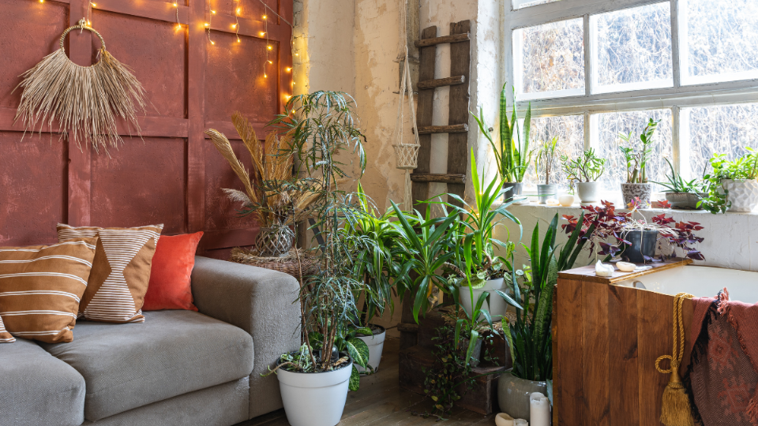
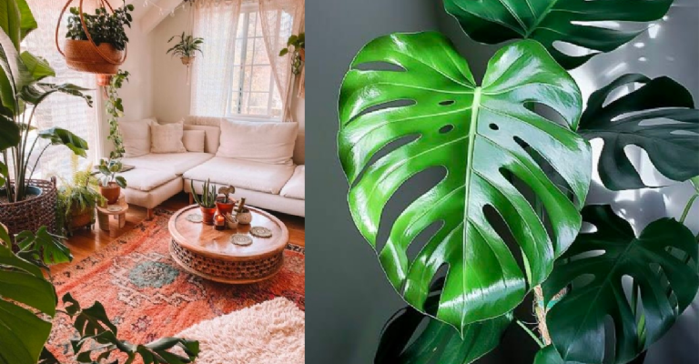
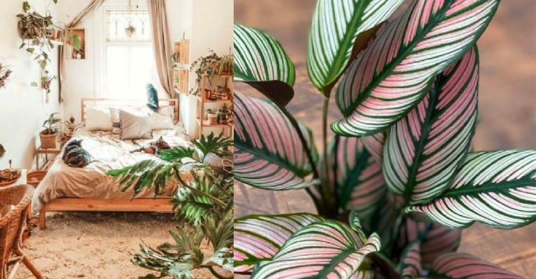

Decora tu casa al estilo boho con estas plantas ideales del Feng Shui
Un espacio que a simple vista se vea organizado y decorado será un lugar que tendrá mucha armonía y energía positiva.
plantas que atraen fortuna según el Feng Shui y permiten equilibrar tu entorno. Sin embargo, también son un excelente elemento para decorar tu casa, sobre todo si eres amante del estilo boho. El Feng Shui es un sistema filosófico chino que tiene como objetivo mantener la armonía de un espacio y de las personas para atraer energías positivas con cualquier objeto y en esta ocasión con las plantas estilo boho.
Cómo decorar tu casa con plantas al estilo boho según el Feng Shui
-
Monstera La planta estilo boho Monstera es perfecta para que la decores en tu sala y mantengas una energía de armonía y naturaleza mientras las personas conviven en ese espacio.
 -
Calatheas Estas plantas dan una gran luz y brillo por eso es recomendable adornarlas en tu habitación, así cuando despiertes la energía será positiva y te sentirás más activa.
